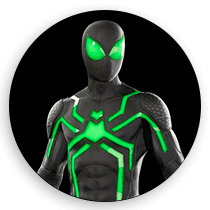

Pour cet exercice nous allons effectuer une transition sur le masque de Spider-Man afin de le faire passer d’un costume à un autre.
Aperçu du résultat 👇
Matériel
Pen de départ
Couleurs 🎨
#2B3784
#DF1F2D
#4EF675
#3D3C38
Vous n’avez qu’à ajouter du CSS (nul besoin de modifier le HTML ou le JavaScript).
Requis
Au survole du masque de Spider-Man changer sa couleur de fond pour le bleu foncé 🔵 et sa couleur de bordure pour le rouge 🔴.
Changez la couleur des lignes droites et circulaires ainsi que le contour des yeux pour les rendre rouges 🔴.
Ajoutez une transition d'un tiers de seconde sur les éléments dont vous modifiez la couleur afin de passer d'une à l'autre progressivement.
Attention, la couleur doit aussi redevenir progressivement à son ancienne couleur lorsque le masque n’est plus survolé.
Bonus
Au focus, faites en sorte que le costume de Spider-man transitionne vers sa version "Big Time". Voir l'image suivante en guise de référence visuelle.

Notes de cours 📚